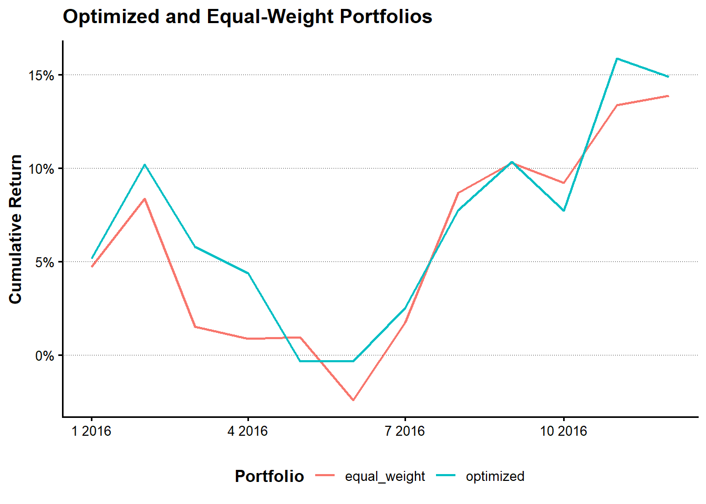

tbl_expected_returns <- read_derived_parquet_file_LFL(
file.path(
"portfolios",
"expected_returns.parquet"
)
)
tbl_return_history <- read_derived_parquet_file_LFL(
file.path(
"portfolios",
"asset_return_history.parquet"
)
)
tbl_investment_universe <- read_derived_parquet_file_LFL(
file.path(
"portfolios",
"investment_universe.parquet"
)
)第I-8章 制約付きポートフォリオ最適化とバックテスト
本章では、第7章で推定した銘柄別期待リターンと、これまでに作成した株式リターン履歴を利用し、実務的な制約条件を満たすポートフォリオを構築する。
第5章では平均分散最適化の基本を確認した。本章では、その考え方にロングオンリー、銘柄別ウェイト上限、VaR上限および売買回転率を加え、アウト・オブ・サンプルのバックテストへ発展させる。
本章では、次の順序で処理を進める。
第7章の期待リターン
↓
投資ユニバースと共分散行列
↓
制約条件
↓
最適ウェイト
↓
ローリング・リバランス
↓
バックテストと評価I-8.1 ポートフォリオ構築の全体像
銘柄数を\(N\)、ウェイトを\(\boldsymbol{w}\)、期待リターンを\(\boldsymbol{\mu}\)、分散共分散行列を\(\boldsymbol{\Sigma}\)とする。
ポートフォリオ期待リターンは、
\[ \mu_p = \boldsymbol{w}^{\top} \boldsymbol{\mu} \]
ポートフォリオ分散は、
\[ \sigma_p^2 = \boldsymbol{w}^{\top} \boldsymbol{\Sigma} \boldsymbol{w} \]
である。
本章では、期待リターンを高めながらリスクを抑える目的関数を用いる。
\[ \max_{\boldsymbol{w}} \left[ \boldsymbol{w}^{\top}\boldsymbol{\mu} - \frac{\gamma}{2} \boldsymbol{w}^{\top} \boldsymbol{\Sigma} \boldsymbol{w} \right] \]
ここで\(\gamma\)はリスク回避度である。
I-8.2 投資ユニバースとリスク推定
I-8.2.1 第7章の出力
tbl_input_overview <- tribble(
~data, ~observations, ~variables,
"expected_returns",
nrow(tbl_expected_returns),
ncol(tbl_expected_returns),
"asset_return_history",
nrow(tbl_return_history),
ncol(tbl_return_history),
"investment_universe",
nrow(tbl_investment_universe),
ncol(tbl_investment_universe)
)
show_table_LFL(tbl_input_overview)
#> # A tibble: 3 × 3
#> data observations variables
#> <chr> <int> <int>
#> 1 expected_returns 6405 5
#> 2 asset_return_history 93525 4
#> 3 investment_universe 6405 6I-8.2.2 最初のリバランス年度
本ドラフトでは、まず1年度分のポートフォリオを構築し、最適化が実行できることを確認する。
rebalance_year <- tbl_investment_universe |>
summarise(
rebalance_year =
min(rebalance_year, na.rm = TRUE)
) |>
pull(rebalance_year)
tbl_universe_one_year <- tbl_investment_universe |>
filter(rebalance_year == !!rebalance_year) |>
arrange(desc(market_equity)) |>
slice_head(n = 20)対象銘柄を20銘柄に限定することで、最初のドラフトではデータ確認と最適化の流れを見やすくする。
I-8.2.3 リターン行列
vec_firm_ids <- tbl_universe_one_year |>
pull(firm_ID)
tbl_return_wide <- tbl_return_history |>
filter(firm_ID %in% vec_firm_ids) |>
select(
month_ID,
firm_ID,
return
) |>
pivot_wider(
names_from = firm_ID,
values_from = return
) |>
arrange(month_ID)
mat_return <- tbl_return_wide |>
select(-month_ID) |>
drop_na() |>
as.matrix()
mat_covariance <- cov(mat_return)
vec_expected_return <- tbl_universe_one_year |>
arrange(firm_ID) |>
pull(expected_return)列順を一致させる。
vec_covariance_firm_ids <- colnames(mat_return) |>
as.integer()
tbl_universe_one_year <- tbl_universe_one_year |>
filter(firm_ID %in% vec_covariance_firm_ids) |>
arrange(match(firm_ID, vec_covariance_firm_ids))
vec_expected_return <- tbl_universe_one_year |>
pull(expected_return)
mat_covariance <- mat_covariance[
as.character(tbl_universe_one_year$firm_ID),
as.character(tbl_universe_one_year$firm_ID),
drop = FALSE
]I-8.3 制約条件
I-8.3.1 完全投資
\[ \sum_{i=1}^{N}w_i=1 \]
I-8.3.2 ロングオンリー
\[ w_i\geq 0 \]
I-8.3.3 銘柄別ウェイト上限
\[ w_i\leq w_{\max} \]
本ドラフトでは、1銘柄の上限を20%とする。
I-8.3.4 VaR上限
正規分布近似によるVaRを、
\[ VaR_c = z_c\sigma_p-\mu_p \]
とする。
\[ z_c \sqrt{ \boldsymbol{w}^{\top} \boldsymbol{\Sigma} \boldsymbol{w} } - \boldsymbol{w}^{\top} \boldsymbol{\mu} \leq VaR_{\max} \]
I-8.3.5 売買回転率
前回ウェイトを\(\boldsymbol{w}_{t-1}\)とすると、
\[ Turnover_t = \frac{1}{2} \sum_{i=1}^{N} |w_{i,t}-w_{i,t-1}| \]
である。
最初のドラフトでは、ロングオンリー、完全投資、ウェイト上限、VaR上限までを実装し、売買回転率はバックテスト部分で計算する。
I-8.4 制約付きポートフォリオ最適化
I-8.4.1 計算関数
portfolio_return_LFL <- function(
weight,
expected_return
) {
sum(weight * expected_return)
}
portfolio_variance_LFL <- function(
weight,
covariance_matrix
) {
as.numeric(
t(weight) %*%
covariance_matrix %*%
weight
)
}
portfolio_volatility_LFL <- function(
weight,
covariance_matrix
) {
sqrt(
portfolio_variance_LFL(
weight,
covariance_matrix
)
)
}
portfolio_var_LFL <- function(
weight,
expected_return,
covariance_matrix,
confidence_level = 0.95
) {
qnorm(confidence_level) *
portfolio_volatility_LFL(
weight,
covariance_matrix
) -
portfolio_return_LFL(
weight,
expected_return
)
}I-8.4.2 最適化条件
maximum_weight <- 0.20
maximum_var <- 0.10
confidence_level <- 0.95
risk_aversion <- 5I-8.4.3 nloptrによる最適化
assets <- length(vec_expected_return)
objective_function <- function(weight) {
-portfolio_return_LFL(
weight,
vec_expected_return
) +
risk_aversion / 2 *
portfolio_variance_LFL(
weight,
mat_covariance
)
}
objective_function <- function(weight) {
objective_value <-
-portfolio_return_LFL(
weight,
vec_expected_return
) +
risk_aversion / 2 *
portfolio_variance_LFL(
weight,
mat_covariance
)
objective_gradient <-
-vec_expected_return +
risk_aversion *
as.numeric(
mat_covariance %*% weight
)
list(
objective = objective_value,
gradient = objective_gradient
)
}
equality_constraint <- function(weight) {
list(
constraints = sum(weight) - 1,
jacobian = matrix(
rep(1, length(weight)),
nrow = 1
)
)
}
inequality_constraint <- function(weight) {
portfolio_volatility <-
portfolio_volatility_LFL(
weight,
mat_covariance
)
constraint_value <-
qnorm(confidence_level) *
portfolio_volatility -
portfolio_return_LFL(
weight,
vec_expected_return
) -
maximum_var
volatility_gradient <- if (
portfolio_volatility > 1e-12
) {
as.numeric(
mat_covariance %*% weight
) /
portfolio_volatility
} else {
rep(0, length(weight))
}
constraint_gradient <-
qnorm(confidence_level) *
volatility_gradient -
vec_expected_return
list(
constraints = constraint_value,
jacobian = matrix(
constraint_gradient,
nrow = 1
)
)
}
equality_constraint <- function(weight) {
sum(weight) - 1
}
inequality_constraint <- function(weight) {
portfolio_var_LFL(
weight,
vec_expected_return,
mat_covariance,
confidence_level
) - maximum_var
}
objective_function <- function(weight) {
objective_value <-
-portfolio_return_LFL(
weight,
vec_expected_return
) +
risk_aversion / 2 *
portfolio_variance_LFL(
weight,
mat_covariance
)
objective_gradient <-
-vec_expected_return +
risk_aversion *
as.numeric(
mat_covariance %*% weight
)
list(
objective = objective_value,
gradient = objective_gradient
)
}
equality_constraint <- function(weight) {
list(
constraints = sum(weight) - 1,
jacobian = rep(1, length(weight))
)
}
inequality_constraint <- function(weight) {
portfolio_volatility <-
portfolio_volatility_LFL(
weight,
mat_covariance
)
constraint_value <-
qnorm(confidence_level) *
portfolio_volatility -
portfolio_return_LFL(
weight,
vec_expected_return
) -
maximum_var
volatility_gradient <- if (
portfolio_volatility > 1e-12
) {
as.numeric(
mat_covariance %*% weight
) /
portfolio_volatility
} else {
rep(0, length(weight))
}
constraint_gradient <-
qnorm(confidence_level) *
volatility_gradient -
vec_expected_return
list(
constraints = constraint_value,
jacobian = constraint_gradient
)
}
assets <- length(vec_expected_return)
if (assets * maximum_weight < 1) {
stop(
"銘柄数とmaximum_weightの組合せでは完全投資制約を満たせません。",
call. = FALSE
)
}optimization_result <- nloptr::nloptr(
x0 = rep(1 / assets, assets),
eval_f = objective_function,
lb = rep(0, assets),
ub = rep(maximum_weight, assets),
eval_g_eq = equality_constraint,
eval_g_ineq = inequality_constraint,
opts = list(
algorithm = "NLOPT_LD_SLSQP",
xtol_rel = 1e-8,
maxeval = 1000,
print_level = 0
)
)
tbl_optimized_weights <- tbl_universe_one_year |>
select(
rebalance_year,
firm_ID,
expected_return
) |>
mutate(
weight = optimization_result$solution
) |>
arrange(desc(weight))
show_table_LFL(tbl_optimized_weights)
#> # A tibble: 20 × 4
#> reb_year fir_ID exp_retur weight
#> <dbl> <dbl> <dbl> <dbl>
#> 1 2016 1253 0.20697 2 e- 1
#> 2 2016 472 0.15848 2 e- 1
#> 3 2016 1205 0.14965 2 e- 1
#> 4 2016 1400 0.18788 2.0000e- 1
#> 5 2016 1408 0.17726 2.0000e- 1
#> 6 2016 721 0.14213 8.8991e-16
#> 7 2016 1057 0.051368 1.3889e-16
#> 8 2016 1237 0.12760 1.1713e-16
#> 9 2016 456 0.015991 7.5341e-17
#> 10 2016 725 0.096705 2.5315e-17
#> # ℹ 10 more rows制約条件を確認する。
tbl_constraint_check <- tribble(
~constraint, ~value, ~limit,
"weight_sum",
sum(tbl_optimized_weights$weight),
1,
"minimum_weight",
min(tbl_optimized_weights$weight),
0,
"maximum_weight",
max(tbl_optimized_weights$weight),
maximum_weight,
"portfolio_var",
portfolio_var_LFL(
tbl_optimized_weights$weight,
vec_expected_return,
mat_covariance,
confidence_level
),
maximum_var
)
show_table_LFL(tbl_constraint_check)
#> # A tibble: 4 × 3
#> constraint value limit
#> <chr> <dbl> <dbl>
#> 1 weight_sum 1.0000 1
#> 2 minimum_weight 0 0
#> 3 maximum_weight 0.2 0.2
#> 4 portfolio_var 0.0052375 0.1I-8.5 バックテスト
最適化したウェイトを、その後の実現リターンへ適用する。
本ドラフトでは、最初のリバランス年度の翌12か月を対象とする。
rebalance_month_ID <- tbl_return_history |>
mutate(
year = lubridate::year(month_date)
) |>
filter(year == rebalance_year) |>
summarise(
first_month_ID =
min(month_ID, na.rm = TRUE)
) |>
pull(first_month_ID)tbl_backtest_returns <- tbl_return_history |>
filter(
firm_ID %in% tbl_optimized_weights$firm_ID,
month_ID >= rebalance_month_ID,
month_ID < rebalance_month_ID + 12L
) |>
left_join(
tbl_optimized_weights |>
select(
firm_ID,
weight
),
by = "firm_ID"
) |>
group_by(
month_ID,
month_date
) |>
summarise(
portfolio_return = sum(
weight * return,
na.rm = TRUE
),
.groups = "drop"
) |>
arrange(month_ID)比較対象として等ウェイト・ポートフォリオを作成する。
tbl_equal_weight_returns <- tbl_return_history |>
filter(
firm_ID %in% tbl_optimized_weights$firm_ID,
month_ID >= rebalance_month_ID,
month_ID < rebalance_month_ID + 12L
) |>
group_by(
month_ID,
month_date
) |>
summarise(
equal_weight_return =
mean(return, na.rm = TRUE),
.groups = "drop"
)
tbl_backtest_returns <- tbl_backtest_returns |>
left_join(
tbl_equal_weight_returns,
by = c(
"month_ID",
"month_date"
)
)tbl_backtest_plot <- tbl_backtest_returns |>
mutate(
optimized = cumprod(
1 + portfolio_return
) - 1,
equal_weight = cumprod(
1 + equal_weight_return
) - 1
) |>
select(
month_date,
optimized,
equal_weight
) |>
pivot_longer(
cols = c(
optimized,
equal_weight
),
names_to = "portfolio",
values_to = "cumulative_return"
)
plot_backtest <- tbl_backtest_plot |>
ggplot(
aes(
x = month_date,
y = cumulative_return,
colour = portfolio
)
) +
geom_line(linewidth = 0.8) +
scale_y_continuous(
labels = scales::label_percent()
) +
labs(
x = NULL,
y = "Cumulative Return",
colour = "Portfolio",
title = "Optimized and Equal-Weight Portfolios"
)
show_plot_LFL(
add_lagrange_theme_LFL(
plot_backtest
)
)
I-8.6 パフォーマンス評価
annualized_return_LFL <- function(
x,
periods = 12
) {
prod(1 + x)^(periods / length(x)) - 1
}
annualized_volatility_LFL <- function(
x,
periods = 12
) {
sd(x) * sqrt(periods)
}
maximum_drawdown_LFL <- function(x) {
wealth <- cumprod(1 + x)
drawdown <- wealth / cummax(wealth) - 1
min(drawdown)
}tbl_performance_summary <- tribble(
~portfolio, ~annualized_return,
~annualized_volatility, ~sharpe_ratio,
~maximum_drawdown,
"optimized",
annualized_return_LFL(
tbl_backtest_returns$portfolio_return
),
annualized_volatility_LFL(
tbl_backtest_returns$portfolio_return
),
annualized_return_LFL(
tbl_backtest_returns$portfolio_return
) /
annualized_volatility_LFL(
tbl_backtest_returns$portfolio_return
),
maximum_drawdown_LFL(
tbl_backtest_returns$portfolio_return
),
"equal_weight",
annualized_return_LFL(
tbl_backtest_returns$equal_weight_return
),
annualized_volatility_LFL(
tbl_backtest_returns$equal_weight_return
),
annualized_return_LFL(
tbl_backtest_returns$equal_weight_return
) /
annualized_volatility_LFL(
tbl_backtest_returns$equal_weight_return
),
maximum_drawdown_LFL(
tbl_backtest_returns$equal_weight_return
)
)
show_table_LFL(tbl_performance_summary)
#> # A tibble: 2 × 5
#> portfolio ann_retur ann_volat sha_ratio max_drawd
#> <chr> <dbl> <dbl> <dbl> <dbl>
#> 1 optimized 0.14896 0.13773 1.0816 -0.095817
#> 2 equal_weight 0.13883 0.12901 1.0761 -0.099548取引コストと売買回転率は、複数回のリバランスを実装した段階で追加する。本ドラフトでは、最適化、制約確認、実現リターンへの適用、等ウェイトとの比較までを一つの流れとして確認する。
I-8.7 結果の保存
tbl_chapter_08_outputs <- list(
optimized_weights =
tbl_optimized_weights,
backtest_returns =
tbl_backtest_returns,
performance_summary =
tbl_performance_summary
)
vec_chapter_08_files <- c(
optimized_weights = file.path(
"portfolios",
"optimized_weights.parquet"
),
backtest_returns = file.path(
"portfolios",
"backtest_returns.parquet"
),
performance_summary = file.path(
"portfolios",
"performance_summary.parquet"
)
)
vec_chapter_08_paths <- tbl_chapter_08_outputs |>
imap_chr(
\(data, name) {
write_derived_parquet_file_LFL(
data,
vec_chapter_08_files[[name]]
)
}
)
tibble::tibble(
output = base::names(vec_chapter_08_paths),
path = relative_path_LFL(base::unname(vec_chapter_08_paths))
) |>
show_table_LFL()
#> # A tibble: 3 × 2
#> output path
#> <chr> <chr>
#> 1 optimized_weights data/derived/portfolios/optimized_weights.parquet
#> 2 backtest_returns data/derived/portfolios/backtest_returns.parquet
#> 3 performance_summary data/derived/portfolios/performance_summary.parquet本章では、第7章の期待リターンを使い、ロングオンリー、完全投資、銘柄別ウェイト上限およびVaR上限を満たすポートフォリオを構築した。
さらに、最適ウェイトを実現リターンへ適用し、等ウェイト・ポートフォリオとの比較を行った。次の段階では、複数年度のローリング・リバランス、売買回転率、取引コストを追加し、バックテストを拡張する。